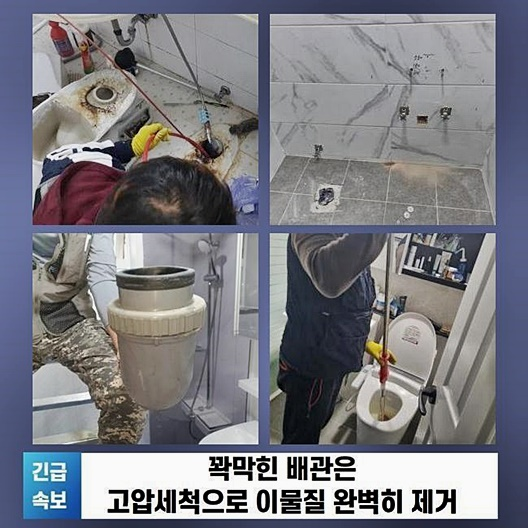
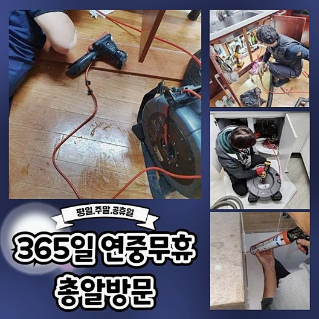
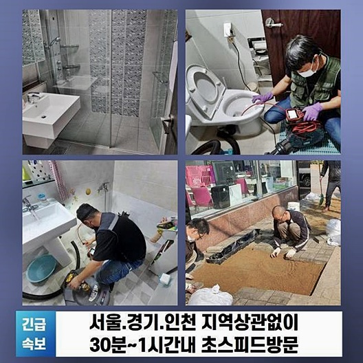
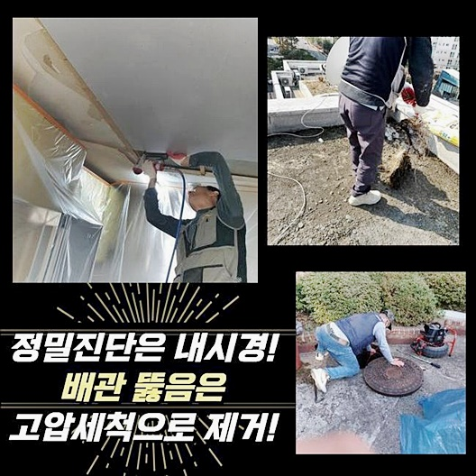
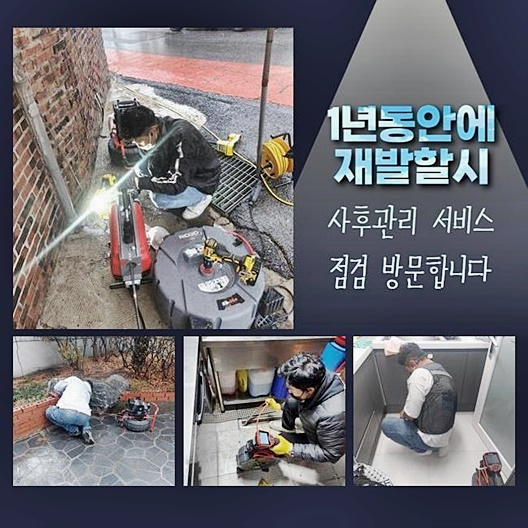
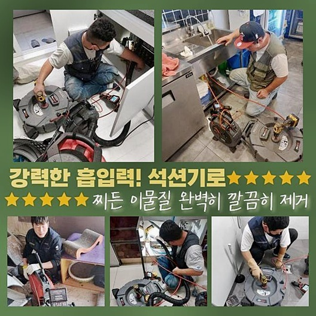
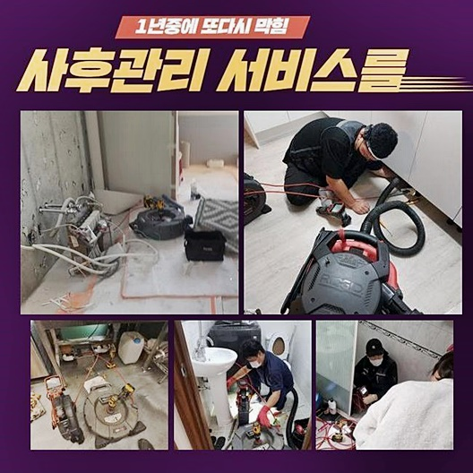

🏠 송파구 방이동씽크대막힘 위례동 맨홀역류 통수전문
용인시 처인구 배관막힘 전문 시공 후기

📋 작업 개요
- 위치: 용인시 처인구, 수원시 영통구, 화성시 동탄
- 서비스 유형: 배관막힘, 고압세척, 내시경점검
- 작업 일시:
- 업체명: 하수구수사대 (010-5615-2118)
🔍 문제 상황
송파구 방이동씽크대막힘 위례동 맨홀역류 통수전문
하수구막힘으로 출동했었던 고객분의 영업시설은 물빠짐이 갈수록 느려지고있다고 문의주셨는데 이런현상은 빠른조치를 취하셔야할 신호탄입니다
자가조치로 처리해보다 일시적으로만 해결되어 불편함을 느끼면 전문적인작업을받으시는게 좋아요
해결을원한다면 저희업체를 통하여 전화를주시면 곧장 출동하여 처리해드리겠습니다
음식점이 막혔을때 확실히 뚫어드리고 쾌적하게 하수구환경을 유지하실수있게끔 도와드리고있으니 맡겨만주세요
고객님께서 설명해주신 내용으로 전체적으로 판단하여 첫번째로 오수와찌꺼기를 석션도구로 흡입시킨후 하수구를오픈해 배관내부를 확인했어요
하수구내부를 살피기위해 부속품들을 분리하여 살펴보았어요
안속깊은곳에 퇴적된 기름덩어리와 찌꺼기들을 깔끔히제거하고 정화과정까지 거쳤답니다
역류발생의 근원이었던 막힘문제를 처리하고 정상적인 배수상태로 돌아오게끔 조치했어요
깨끗하게 사용하시도록 유지보수에 대한 부분과 관리방법도 안내드렸어요
신속정확한 대처를통해 문제를타파해 고객님의 만족감을 높혀드렸어요
다음현장은 상가건물이었는데 전문장비들을 구비하여 문제장소를 방문해주었죠

🔎 원인 분석
💡 전문가 진단: 정밀 진단 장비를 사용하여 슬러지의 고착 여부를 판명하고 타격/세척 작업을 실시했습니다.
물이빠지는것이 점차 느려지고있다고 알려주셨고 배관점검도 한두번 대처해봤지만 확실히 뚫리지않아 답답함을 느끼고계셨죠
배수문제는 전문적인지식이 필요하다보니 저희한테 맡겨주셔서 좋게생각해요
저희작업으로 막힌배관이 해소되었으면 좋겠습니다
같은일로 막힘이 다시한번 일어났을시 편히 연락주신다면 신속하게 대처해드릴게요
원활하게물이 흘러가지못하고 역류증세까지 발생해서 음식물냄새도 퍼지고있는 상황이었고 이것들로인해 고객분에게 곤란함들을 야기시켰답니다
주방을사용할때 물이빠져나가지않고 물이넘친다면 건강상으로도 해로울수가 있답니다
그러므로 빠른대처가 필요했는데요
여러현장을 오랫동안 방문하여 경험을가지고있는 기사님들께서 방문드린뒤 막혀있는 원인에대해 알아내드렸죠
발생한이유는 오염물때문에 막힘현상이 발생된걸로 알수있었죠
계속하여 일러드리지만 막힘증세는 빠른대처를 통해서 처리해봐야하는데 하수도가막혀 역류로이어지면 일상에 막대한지장을 야기시킬수있어요
저희들은 고객님들의 깔끔한환경을 만들어드리고자 조속하게 처리해드릴것을 약속드려요
알맞은조치를 통하여 문제를정확히 타파시켜드리도록 하겠습니다!
정상적인 배수시스템을 만들기위해 노력하고있고 혹여라도 실패하게될경우 작업비를 요구하지않아요

🔧 작업 과정
막힘문제에있어 예방하는 방법까지 안내하고있죠
고객께서 쾌적환생활을 유지할수있도록 꼼꼼히 작업에 착수하겠습니다
저희들의경우 배관의 특징이무엇인지 고려한후 대책을 마련하는 과정을통해 수행하고있습니다
내시경기계를 이용하여 하수구내부를 살피고 구조에대한것과 오염도에대해 파악합니다
카메라장비는 오염물질이 쌓여있는모습을 자세히보여주며 이것을토대로 의뢰자에게 현재상황을 설명하죠
이러한절차로 세세하고 효과적인 써비스를 제공하고있죠
간헐적으로 배관세척을 진행하는게 좋습니다
배관안속은 다량의 석회물과 슬러지가 퇴적되기때문에 제거해내야만 한답니다
앞서 설명드렸지만 하수구내시경을 쓰면 육안으로 살펴보기 어려운곳까지 점검할수있어요
이것외에도 이물질의 현황까지 확인이가능해요
이러한이물을 소거시키려면 최첨단장비가 필요한데요
세척과정시 슬러지이물은 분쇄하기가 까다롭기에 물을활용해서 누그러뜨린뒤 썩션기로 빨아올리는것이 효과적일수있죠
고착물질로 인하여 굳은경우에는 샤프트기계를 이용해 없앨수가있죠
오늘장소는 야채껍질들과 거대한슬러지가 배관시스템을 무너뜨린 상황이었는데요
이로인하여 간단한 스케일링으로는 해결하기어려웠고 샤프트기계로 분해를해준뒤 고압세척으로 하수도를 정리하기로 수립계획을 짰습니다
이것으로 배수가 막혔던현상이 깔끔히 해결될걸로 기대가되는데요
분해를시작하니 잔여되어있던 이물과 찌꺼기들이 분쇄되었습니다
막힌지점의경우 분해강도를 조절하면서 진행해야했는데 이로인하여 하수구손상을 발현시키지않고서 마칠수있었어요
분해작업이 끝나고나니 이물질이 분해되어 청소과정을 진행해보기 좋은상태가 되었으며 이후에는 고압청소기로 청소하기로했죠
수압력이쎈 물줄기로쏘아 하수구내의 찌꺼기들을 제거할수있었는데 배관에크랙을 발생시키기않게 신경써서 작업해야했죠


✅ 작업 완료
모든계획을 마무리한뒤 기계들을챙겨 현장을나섰죠
하수구가 막히는것을 방치시키지말고 징조가나타날때 조치를 취하실것을 권유드릴게요
내버려두실경우 2차피해로 연결될수있으므로 빠른대처가 필요한거에요
지역관계없이 60분내로 도착할수있으며 분명하게 작업계획들을 공개하고있으니 우려하지않으셔도 된답니다
저희를찾아주시면 신뢰해주신만큼 실패없는결과로 보여드릴게요
이밖으로도 궁금하신게 남으셨다면 시간상관없이 연락을통해 물어보신다면 세세한응대로 맞이하겠습니다




⚠️ 하수구 배관 막힘 예방 및 관리 가이드
- ✅ 머리카락, 비닐, 물티슈 등 물에 분해되지 않는 이물질은 절대 흘려보내지 마세요.
- ✅ 기름기 많은 식기는 설거지 전 키친타올로 먼저 기름때를 닦아내세요.
- ✅ 주기적으로 배수구에 뜨거운 물을 가득 부어주어 유지방 고착을 방지하세요.
- ✅ 작업 후 1년 이내 재발 시 무상 A/S 보증 서비스를 제공합니다.
💡 핵심 정리
- 확실한 장비 작업(내시경 점검 및 샤프트 스케일링)으로 원인을 뿌리 뽑습니다.
- 작업 후 1년 이내에 동일한 부위 재발 시 100% 무상 A/S 서비스를 보장합니다.
- 서울 · 경기 · 인천 전 지역에 24시간 언제든 긴급 출동할 수 있도록 항시 대기 중입니다.
❓ 자주 묻는 질문 (FAQ)
🚨 용인시 처인구 배관막힘 문제로 고민이신가요?
정확한 원인 진단과 확실한 시공으로 재발 없는 해결을 약속드립니다.
24시간 긴급 출동 | 서울 · 경기 · 인천 전지역 | 1년 내 재발 시 무상 A/S